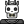

Dota 2 — компьютерная многопользовательская командная игра в жанре multiplayer online battle arena, разработанная корпорацией Valve.
Игра является продолжением DotA — пользовательской карты-модификации для игры Warcraft III: Reign of Chaos и дополнения к ней Warcraft III: The Frozen Throne. Игра изображает сражение на карте особого вида; в каждом матче участвуют две команды по пять игроков, управляющих «героями» — персонажами с различными наборами способностей. Для победы в матче команда должна уничтожить особый объект-«крепость», принадлежащий вражеской стороне, и защитить от уничтожения собственную «крепость». Dota 2 работает по модели free-to-play с элементами микроплатежей.
Изначально Dota 2 была выпущена на игровом движке Source, после чего в 2015 году была портирована на Source 2, став первой работающей на нём игрой. В Dota 2 предусмотрена возможность создавать пользовательские режимы игры, оформление карты и косметические предметы для героев, после чего добавить их в Dota 2 при помощи Steam Workshop. Dota 2 является одной из наиболее популярных игр в Steam и получила в целом положительные отзывы критиков за игровой процесс, качество производства и сохранение положительных сторон своей предшественницы. Среди основных недостатков игры была отмечена сложность обучения.
Игровой процесс

Dota 2 представляет собой многопользовательскую игру в жанре MOBA («многопользовательская онлайновая боевая арена»), в которой сражаются две команды по пять игроков. В игре участвуют две команды по пять человек. Одна команда играет за светлую сторону (англ. The Radiant), другая — за тёмную (англ. The Dire). Конечная цель каждого матча — уничтожить вражескую «крепость» (англ. Ancient), особый объект, принадлежащий противнику, и защитить собственную крепость. Подобно Defense of the Ancients, Dota 2 использует управление с помощью мыши и клавиатуры, схожее с управлением в стратегиях в реальном времени, и вид с расстояния, имитирующий изометрическую проекцию.
Позиции (роли) героев
- Кэрри, керри. В подавляющем большинстве случаев кэрри — это герой, который наносит урон основной атакой. Исключения крайне редки (Banehallow the Lycan, волк-оборотень, воюет призванными существами). Чем больше купит артефактов на выживаемость и урон, тем сильнее он станет — и потому кэрри берёт с карты максимум золота (по одной из оценок, более трети). Но, как противовес, в начале игры он крайне слаб, и к нему привязано внимание саппортов. Идёт вместе с саппортом на ту линию, где проще убивать крипов (при прочих равных это горизонтальная линия — нижняя для Света и верхняя для Тьмы).
- Мидер, мидлейнер. Боевые роли остальных четырёх позиций могут быть самые разные (танк, магический урон, инициатор боёв, целитель и прочее), они отличаются в первую очередь поведением на линии и вне боя. Мидеры сражаются «один на один» на центральной линии и потому в начале игры имеют самый высокий уровень. А значит, мидер, незаметно сместившийся на другую линию, обеспечивает там критический перевес сил. И наоборот, удачно подготовленная засада на мидера даёт много золота и опыта. Как правило, герои на позиции мидера должны обладать сильными заклинаниями, чтобы реализовать этот временный выигрыш по уровню. Офлейнер, хардлейнер играет на более сложной линии — при прочих равных это верхняя для Света и нижняя для Тьмы — и пытается в трудной ситуации не умирать и набрать максимальный уровень. Часто (хоть и не всегда) в бою офлейнер будет «танком» или инициатором боёв.
- Офлейнер, хардлейнер играет на более сложной линии — при прочих равных это верхняя для Света и нижняя для Тьмы — и пытается в трудной ситуации не умирать и набрать максимальный уровень. Часто (хоть и не всегда) в бою офлейнер будет «танком» или инициатором боёв.
- Полусаппо́рт, семи-саппорт, частичная поддержка, саппорт 4-й позиции может, в зависимости от игровой моды и текущей ситуации, помогать офлейнеру или кэрри, убивать лесных тварей (лесник) или перебегать туда, где нужно обеспечить сиюминутный перевес (роумер). Если одна из линий временно опустела, туда идёт охотиться полусаппорт — а не саппорт.
- Саппо́рт, фулл-саппорт, полная поддержка, саппорт 5-й позиции имеет минимум золота, и помогает остальным героям заклинаниями. В начале игры находится, как правило, близко к кэрри и опекает его, помогая заклинаниями и подтягивая точку, где крипы встречаются, ближе к собственной башне теми или другими способами (например, добиванием или отводом в лес собственных крипов). Его задачей также является установка вардов (глаз-наблюдателей), покупка расходных материалов и артефактов, полезных для всей команды. Зачастую на пятой позиции играет капитан команды.
Первые три роли — ключевые (ко́ры), четвёртая и пятая — саппо́рты. Разница между теми и другими в том, что коры
убивают больше крипов и получают больше золота, когда саппорту остаются лишь оставшиеся крипы. Одни герои могут
быть и корами, и саппортами, другие нет: у одних не хватит способностей для помощи корам, а у других нет
возможности быстро убивать крипов.
Ключевое в ролях — именно распределение ресурсов, а не расстановка по линиям: если у врага на центральной
линии
Broodmother (паучиха с паучатами), то Sven (герой с уроном по площади, способный эффективно убивать паучков),
который пошёл в центр ей противостоять, остаётся кэрри, и именно ему должны помогать саппорты. Годность
героя на ту или иную роль определяется неудачными играми: что будет, если игра пойдёт не по плану и рабочие
артефакты запоздают.
Позиции — эмпирическое правило, а не незыблемая константа: для самых начинающих всерьёз рекомендуют взять
пятерых самодостаточных героев и «задавить врага толпой». Без позиций играет и OpenAI, который прокачивает
всех пятерых героев равномерно. Тем не менее, все, начиная от среднего уровня и заканчивая киберспортом,
играют пятью позициями, и за каждым членом киберспортивной команды закреплена своя позиция.